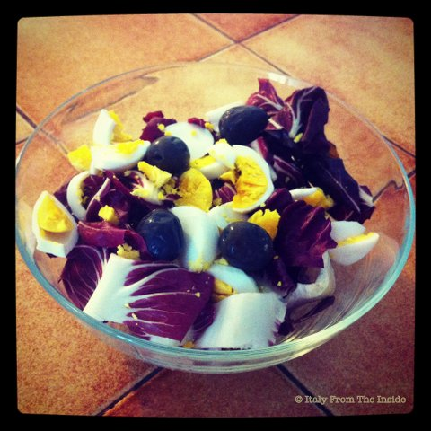

If the stracchino is something hard to find in the States, fortunately the radicchio rosso is widely available. Try it with some hard boiled eggs and black juicy olives. And obviously, always use Italian dressing (extra virgin olive oil, vinegar, salt and pepper. Period).